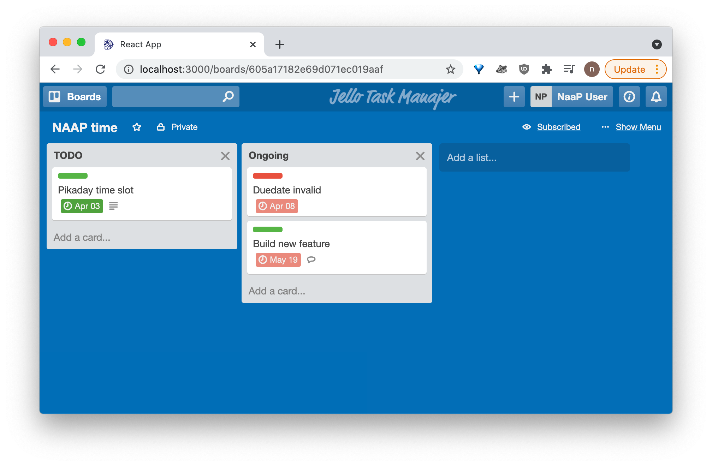
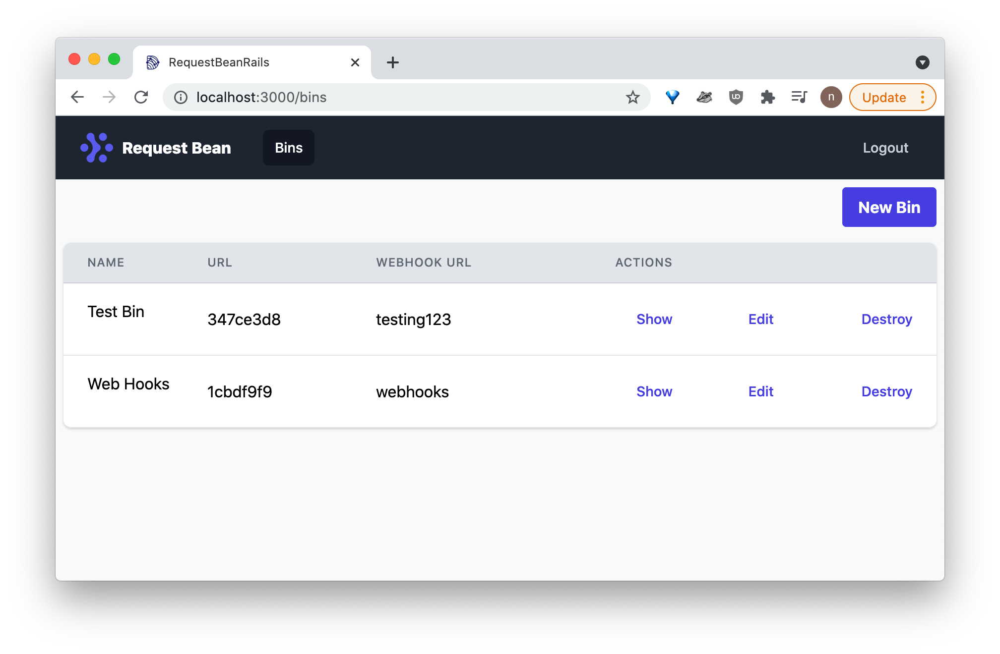

Nicholas LiCalzi
I'm a software engineer located in Brooklyn, NY with
years of experience in Ruby, JavaScript, and Python.
I recently built Dendro, an open source, serverless
monitoring framework for small, distributed apps,
using Typescript, Go, React, NextJS, and AWS.
I have an M.S. degree in urban data science from NYU's
Center for Urban Science and Progress (CUSP) and
am interested in cloud platforms, data pipelines,
data science, mapping, and visualization.
Dendro is an open source, serverless monitoring framework for small, distributed applications.
Dendro enables you to collect, centralize, and store log and metric data emitted by the various disparate pieces of your system.
That way, when something goes down in production, there’s no race to SSH into a dozen different nodes to figure out what’s gone wrong; all of the log data you’d use for debugging has already been collected, processed and tagged with the servers and services that originated the individual records, and stored in a single database for querying.
Dendro provides an easy-to-use CLI that abstracts and automates away toil and dozens of AWS API calls in setting up a serverless streaming pipeline, helps busy engineers get started collecting their monitoring data ASAP (so you have it when you need it to debug an outage), and provides a convenient querying and dashboarding frontend interface for data exploration.
Read the Case StudyCheck out the presentation I gave with my remote team spread across the USA on how we built Dendro.
Other highlighted projects
-

Jello: Project Manajer
A full-stack, fully functional project management application (featuring drag and drop and more), built with React, Redux, Express, MongoDB, and more.
-

Request Bean
A Request Bin style application for collecting and inspecting HTTP/webhook requests built with Rails, ActionCable and Redis (real-time functionality with WebSockets), PostgreSQL, and more.